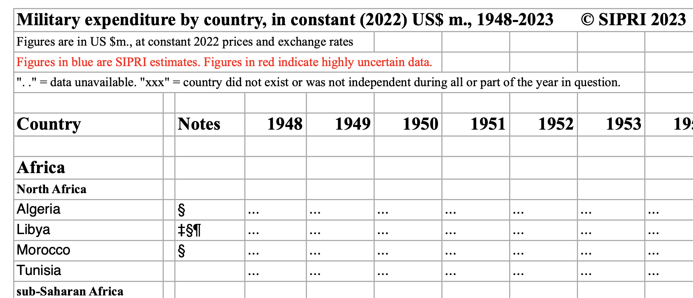
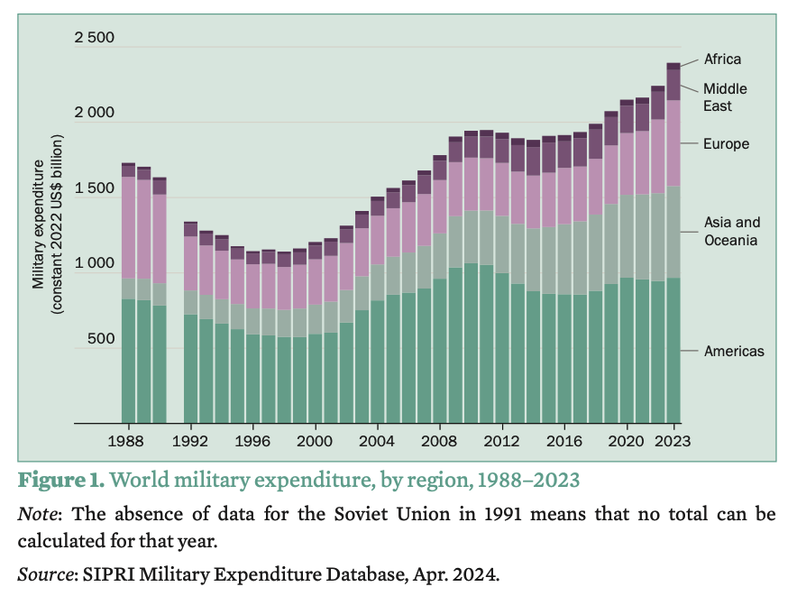
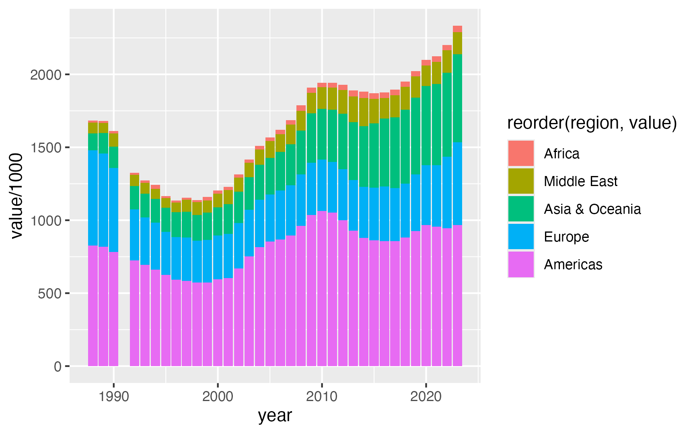
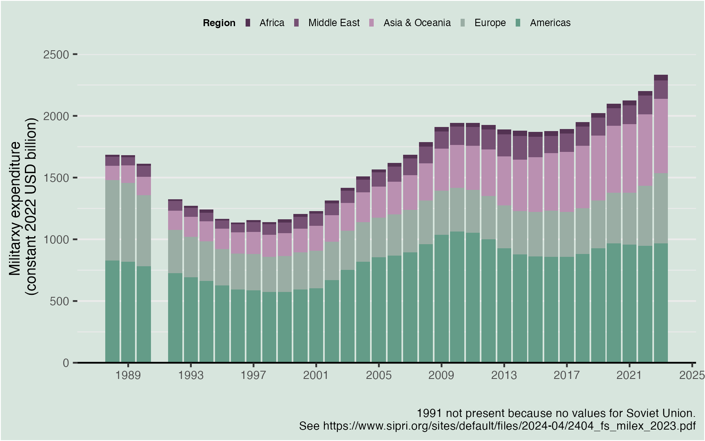

![]()
# install.packages("devtools")
devtools::install_github("datapumpernickel/milRex")
library(milRex)SIPRI data
Data from the Stockholm International Peace Research Institute is the only source on military expenditure that is entirely open source. Most research on military expenditure relies on their yearly updates.
When working with their data, I realised that the xlsx files they provide are sometimes a little complicated to parse, because they include information in footnotes, as well as additional columns and rows that are not read in properly by the classic functions for reading in excel files.

Hence, when parsing this file for the first time, I thought it would be handy to have a package for R, that queries their database, downloads the excel file and directly parses it nicely into the classic format for R, a tibble().
Installing milRex
The resulting package, milRex is currently not on CRAN, because the submission process is somewhat of a hussle and it is quite straight-forward to install adn then load it from github. For that you need the package devtools.
Now you have access to the following indicators from the package:
| Available Indicators | |
|---|---|
| in the SIPRI database | |
| Description | Indicator |
| Constant (2022) US$ | constantUSD |
| Current US$ | currentUSD |
| Share of GDP | shareOfGDP |
| Share of Govt. spending | shareGovt |
| Regional totals | regionalTotals |
| Local currency financial years | currencyFY |
| Local currency calendar years | currencyCY |
| Per capita | perCapita |
| all of the above | all |
| Source: Information from the Stockholm International Peace Research Institute (SIPRI) Military Expenditure Database, https://doi.org/10.55163/CQGC9685. | |
Getting data
Actually downloading the data is quite straight-forward, just do:
milex <- sipri_get_data(indicator = "constantUSD")library(dplyr)
glimpse(milex)
## Rows: 13,050
## Columns: 5
## $ sheet <chr> "Constant (2022) US$", "Constant (2022) US$", "Constant (2022) US$", "Constant (2022) US$", "Constant (2022) US$", "Constant (2022) US$", "Constant (2022) US$", "Constant (2022) US$", "Constant (2022) US$", "Constant (2022) US$", "Constant (2022) US$", "Constant (2022) US$", "Const…
## $ country <chr> "Algeria", "Algeria", "Algeria", "Algeria", "Algeria", "Algeria", "Algeria", "Algeria", "Algeria", "Algeria", "Algeria", "Algeria", "Algeria", "Algeria", "Algeria", "Algeria", "Algeria", "Algeria", "Algeria", "Algeria", "Algeria", "Algeria", "Algeria", "Algeria", "Algeria", "Algeri…
## $ year <chr> "1949", "1950", "1951", "1952", "1953", "1954", "1955", "1956", "1957", "1958", "1959", "1960", "1961", "1962", "1963", "1964", "1965", "1966", "1967", "1968", "1969", "1970", "1971", "1972", "1973", "1974", "1975", "1976", "1977", "1978", "1979", "1980", "1981", "1982", "1983", "1…
## $ value <dbl> NA, NA, NA, NA, NA, NA, NA, NA, NA, NA, NA, NA, NA, NA, NA, NA, NA, NA, NA, NA, 243.71, 227.69, 223.22, 216.05, 223.86, 429.15, 478.36, 666.69, 581.81, 630.25, 623.36, 709.02, 630.17, 727.57, 731.34, 686.81, 643.40, 633.13, 645.42, 638.69, 624.28, 666.89, 682.73, 1142.43, 1228.38, …
## $ missing <chr> "data unavailable", "data unavailable", "data unavailable", "data unavailable", "data unavailable", "data unavailable", "data unavailable", "data unavailable", "data unavailable", "data unavailable", "data unavailable", "data unavailable", "data unavailable", "data unavailable", "d…Looking at the data, it becomes apparent, that there is a few columns that are returned, we know the indicator we downloaded, the country name, as well as supposed iso codes and values, as well as a column for missing. However, the iso codes by SIPRI often do not match the official ISO codes, we will see below.
As we can see from the glimpse above, some of the data is not available.
| Reasons for missing data | |
|---|---|
| in the SIPRI database | |
| Specified Reason | # missing |
| country did not exist or was independent | 235 |
| data unavailable | 4628 |
| Source: Information from the Stockholm International Peace Research Institute (SIPRI) Military Expenditure Database, https://doi.org/10.55163/CQGC9685. | |
As we can see, most missings are there, because the data is simply not available, whereas some are originating from countries that simply did not exist at the time. The database dates military expenditure back to 1945.
Plotting Data
For starters, lets try to replicate the yearly graph that SIPRI published about overall military expenditure in constant USD. At SIPRI it looks like this:

We need to aggregate data by regions, which is easily done with a dataset included in the package, that contains the regions with machted country codes.
We need a few libraries for that, which we will load, afterwards we join the region names to our data, we then sum up the values, excluding the missing values. We also limit the data to years after 1988 and exclude the year 1991, as recommended by SIPRI. Afterwards we format the date column to a nice yearly date for the plot.
library(lubridate)
##
## Attaching package: 'lubridate'
## The following objects are masked from 'package:base':
##
## date, intersect, setdiff, union
library(ggplot2)
library(dplyr)
milex_regional <- milex |>
dplyr::left_join(milRex::sipri_regions) |> ## join data
dplyr::summarise(value = sum(value, na.rm = T),
.by = c(region, year)) |> ## sum up
dplyr::filter(year >= 1988)|> ## exclude values pre-1988
dplyr::mutate(value = if_else(year == 1991, 0, value)) |> # exclude 1991
dplyr::mutate(year = paste(year, "01-01") |>
lubridate::ymd()) # format dates nicely
## Joining with `by = join_by(country)`Now we can plot this, by using ggplot2. However, the resulting plot, without any further formatting does not look too nice.
ggplot2::ggplot(milex_regional) +
ggplot2::geom_col(ggplot2::aes(year, value/1000,
fill = reorder(region, value)))
When we apply some additional formatting we get pretty far in approximating the SIPRI plot!
ggplot(milex_regional) +
geom_col(aes(year, value/1000, fill = reorder(region, value))) +
labs(y = "Militarxy expenditure\n (constant 2022 USD billion)",
caption = "1991 not present because no values for Soviet Union.\n See https://www.sipri.org/sites/default/files/2024-04/2404_fs_milex_2023.pdf",
fill = "Region",
x = "") +
theme_bw() +
theme(plot.background = element_rect(fill = rgb(215, 229, 221,
maxColorValue = 255)),
panel.background = element_rect(fill = rgb(215, 229, 221,
maxColorValue = 255)),
legend.background = element_rect(fill = rgb(215, 229, 221,
maxColorValue = 255)),
legend.position = "top",
legend.text = element_text(size = 6),
legend.title = element_text(size = 6,face = "bold"),
panel.border = element_blank(),
axis.line.x = element_line(),
text = element_text(size = 9),
panel.grid.major.x = element_blank(),
panel.grid.minor.x = element_blank(),
legend.key.size = unit(0.05, 'in'))+
scale_fill_manual(values =
c(
rgb(83,50,82, maxColorValue = 255),
rgb(118,81,116, maxColorValue = 255),
rgb(186,144,177, maxColorValue = 255),
rgb(154,173,164, maxColorValue = 255),
rgb(100,156,136, maxColorValue = 255)
))+
scale_x_date(breaks = "4 years",date_labels = "%Y")+
scale_y_continuous(breaks = seq(0,2500,500), limit = c(0, 2500), expand = c(0,0))

Putting it on a map, ’cause everybody loves maps…
Lets do a map of EU countries and the respective share of GDP they spend on defence. Here we use a few more packages to match the actual country codes to their geo-spatial files.
We also use a bounding box (bbox), to crop the geo-spatial files, so we don´t plot some French islands in the Atlantic ocean.
library(sf)
library(giscoR)
library(countrycode)
## this gets us a vector of iso3codes for EU countries
eu_countries <- giscoR::gisco_countrycode |> dplyr::filter(eu) |> dplyr::pull(ISO3_CODE)
## this is a bounding box, figuring out the limits can be a bit tricky
## there is a pretty good tutorial on this here: https://datascience.blog.wzb.eu/2019/04/30/zooming-in-on-maps-with-sf-and-ggplot2/
bounds <- st_bbox(c(xmin = -20, xmax = 35, ymin = 34, ymax = 70))
### giscoR lets us get the official shape files used by Eurostat
eu_map <- giscoR::gisco_get_countries() |> dplyr::filter(ISO3_CODE %in% eu_countries) |> sf::st_crop(bounds)
## lets get them also for other countries for a nice backdrop
world_map <- giscoR::gisco_get_countries() |> sf::st_crop(bounds)
## now we get the sipri data
eu_share_gdp <- sipri_get_data(indicator = "shareOfGDP") |>
## next we transform the country cdoes to actual iso codes (e.g. SIPRI uses AST for Austria...)
dplyr::mutate(iso3c = countrycode::countrycode(country, origin = "country.name.en", destination = "iso3c")) |>
dplyr::filter(iso3c %in% eu_countries) |>
## restrict to EU countries and the last available year
dplyr::filter(year == max(year)) |>
dplyr::left_join(eu_map, by = c("iso3c" = "ISO3_CODE")) |>
sf::st_as_sf()It becomes quite clear, how the countries bordering or close to Russia dedicate a much higher share of their GDP to defence. In addition, of course Greece, which has high geopolitical tensions with Turkey spends a high share.
library(ggplot2)
library(grid) # For using inset layout
ggplot(eu_share_gdp) +
geom_sf(data = world_map, fill = "grey60") +
geom_sf(aes(fill = value * 100)) +
theme_void() +
theme(
panel.background = element_rect(fill = "lightblue", color = NA),
plot.background = element_rect(fill = rgb(215, 229, 221, maxColorValue = 255)),
legend.background = element_blank(),
legend.position = "inside",
legend.position.inside = c(0.1, 0.3),
legend.text = element_text(size = 7),
legend.title = element_text(size = 8, face = "bold"),
legend.key.size = unit(0.3, 'in'),
title = element_blank(),
plot.margin = margin(
t = -10,
r = -1,
b = -1,
l = -1
)
) +
coord_sf(expand = FALSE, ylim = c(34, 65)) +
scale_fill_gradient2(
low = rgb(100, 156, 136, maxColorValue = 255),
mid = "white",
midpoint = 2,
high = rgb(118, 40, 116, maxColorValue = 255)
) +
labs(fill = "% of GDP") +
annotate(
geom = "label",
x = -10,
y = 60,
label = "Military Expenditure \n as share of GDP in 2023",
fill = "grey10",
color = "white",
fontface = "bold",
label.size = NA
) +
annotate(
geom = "label",
x = 7.8,
y = 34.3,
label = " Source: Information from the Stockholm International Peace Research Institute (SIPRI) Military Expenditure Database, https://doi.org/10.55163/CQGC9685. ",
size = 2,
fill = "white",
color = "grey10",
fontface = "bold",
label.size = NA
)
This becomes even clearer, if we check whether countries reach the spending target of 2% of GDP by the NATO.

Citation
BibTeX citation:
@online{bochtler2024,
author = {Bochtler, Paul},
title = {Military {Expenditure} {Data} from {SIPRI}},
date = {2024-09-20},
url = {https://www.paulbochtler.de/blog/2024/01/},
langid = {en}
}
For attribution, please cite this work as:
Bochtler, Paul. 2024. “Military Expenditure Data from
SIPRI.” September 20, 2024. https://www.paulbochtler.de/blog/2024/01/.